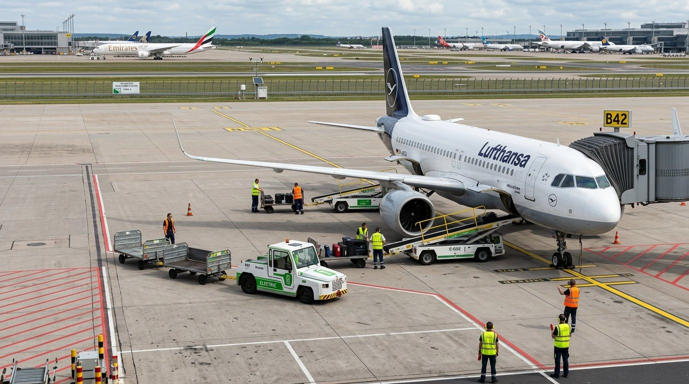
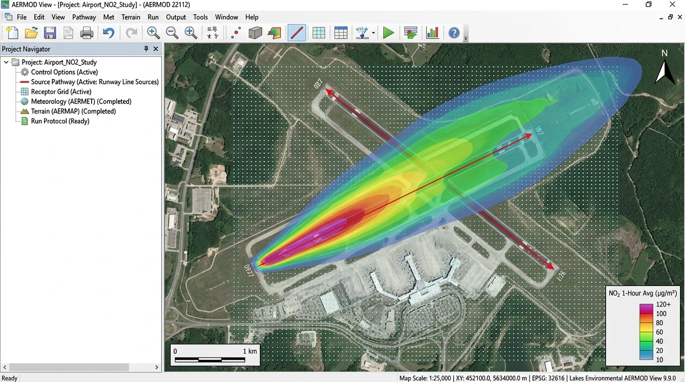

Estudios de Impacto Ambiental (EsIA), Emisiones Atmosféricas y Evaluación de Procedimientos de Vuelo
Consultoría aeronáutica especializada en licenciamiento ambiental de aeropuertos, inventarios de emisiones, modelización computacional AERMOD y optimización ambiental de trayectorias bajo OACI Doc 9889, OACI Anexo 16 y OACI Doc 9829.
1. ESTUDIOS DE IMPACTO AMBIENTAL (EsIA) Y PLANES DE GESTIÓN (PGA)
Elaboración integral de expedientes ambientales para proyectos de infraestructura aeroportuaria, garantizando viabilidad técnica, cumplimiento normativo y aprobación ante autoridades ambientales.

EsIA para Aeropuertos, Aeródromos, Helipuertos y Obras Asociadas
Formulación técnica integral del Estudio de Impacto Ambiental para proyectos aeroportuarios de toda envergadura:
- Licenciamiento de Nuevos Emplazamientos: Evaluación de línea base física, biológica y socioeconómica para nuevos aeropuertos comerciales, aeródromos y helipuertos de soporte médico/industrial.
- Obras de Infraestructura Asociada: Caminos perimetrales, accesos viales, sistemas de drenaje aeronáutico, subestaciones eléctricas y depósitos de combustible (Jet A-1 / Avgas).
- Compatibilidad con el Uso del Suelo: Análisis de zonas de amortiguamiento y ordenamiento territorial periaeroportuario según OACI Doc 9184 y Anexo 14.
Evaluación Ambiental de Ampliaciones y Modificaciones
Sustentación ambiental de intervenciones en aeropuertos operativos:
- Prolongación y Ensanche de Pistas (RWY): Determinación de afectaciones ambientales derivadas del desplazamiento de umbrales y aumento de capacidad de aeronaves críticas.
- Nuevas Calles de Rodaje y Plataformas: Evaluación de escorrentía, impermeabilización de suelos y emisiones asociadas a nuevas posiciones de estacionamiento.
- Ampliación de Terminales y Hangares: Estudios de demanda energética, generación de residuos y efluentes aeroportuarios.
Estudios de Factibilidad Ambiental y Análisis de Alternativas
Herramienta de decisión técnica en etapas tempranas de planeamiento:
- Comparación Multivariada de Sitios: Análisis comparativo de sitios potenciales considerando topografía, dispersión de contaminantes, ecosistemas frágiles y cercanía urbana.
- Optimización de Orientación de Pistas: Evaluación conjunta de rosa de los vientos (usabilidad anemométrica) y minimización de impacto en poblaciones vecinas.
- Minimización de Riesgos de Conflicto Social: Análisis preventivo de sensibilidad comunitaria y riesgo por afectaciones acústicas o lumínicas.
Medidas de Mitigación y Planes de Gestión Ambiental (PGA)
Instrumentos de gestión operativa para garantizar la sostenibilidad continua:
- Identificación y Valoración Cuantitativa: Aplicación de matrices de causa-efecto para cuantificar impactos en fase de construcción y operación.
- Planes de Mitigación Preventiva y Correctiva: Barreras acústicas, deflectores de chorro (blast fences), sistemas de captación de hidrocarburos y protocolos de control de polvo.
- Programas de Monitoreo Ambiental: Cronogramas de muestreo periódico de calidad del aire, emisiones gaseosas, ruido y calidad de aguas subterráneas con parámetros medibles.
2. INVENTARIOS Y MODELIZACIÓN DE EMISIONES ATMOSFÉRICAS
Inventarios de emisiones de aeronaves (ciclo LTO), vehículos y equipos GSE, modelización de dispersión atmosférica mediante AERMOD y análisis de alternativas operacionales.

Inventarios de Emisiones de Aeronaves, GSE y Vehículos
Contabilidad integral de fuentes de emisión según OACI Doc 9889 y directrices EPA:
- Ciclo LTO de Aeronaves: Cálculo de emisiones en las cuatro fases estándar de OACI (aproximación, rodaje/taxi, despegue y ascenso inicial) utilizando factores oficiales de la base ICAO Engine Emissions Databank.
- Equipos de Apoyo en Tierra (GSE): Inventario de tractores de remolque (pushback), generadores GPU, arrancadores neumáticos ASU, fajas transportadoras, carros portaequipaje y camiones cisterna de combustible.
- Tráfico Terrestre e Instalaciones Fijas: Emisiones del acceso vehicular de pasajeros y carga, grupos electrógenos de emergencia y plantas de climatización.
Modelización de Dispersión Atmosférica con AERMOD
Simulación computacional de plumas de dispersión de contaminantes en terreno complejo:
- Software Estándar Regulatorio (AERMOD): Modelo atmosférico validado internacionalmente para evaluar la concentración espacial y temporal de contaminantes criterio.
- Contaminantes Modelados: Óxidos de Nitrógeno (NOx), Dióxido de Azufre (SO2), Monóxido de Carbono (CO), Material Particulado (PM10 y PM2.5) y Compuestos Orgánicos Volátiles (COV).
- Integración Meteorológica y Topográfica: Procesamiento de datos meteorológicos de superficie y altura (AERMET) acoplados con elevación digital del terreno (AERMAP).
Evaluación de Escenarios Operacionales y Calidad del Aire
Análisis predictivo de la evolución de la calidad del aire:
- Escenarios de Crecimiento de Tráfico: Simulación comparativa entre la situación actual, horizonte de corto plazo (5 años) y saturación de capacidad del Plan Maestro.
- Picos Operacionales y Estacionalidad: Evaluación del impacto en horas punta de operaciones concentradas y condiciones atmosféricas desfavorables (inversiones térmicas).
- Contraste con Estándares de Calidad Ambiental (ECA): Verificación estricta de cumplimiento respecto a los límites máximos permisibles nacionales y guías de la OMS.
Análisis de Alternativas para Reducir Emisiones
Evaluación técnica de medidas operacionales y electrificación de equipos:
- Electrificación de Equipos de Asistencia en Tierra (GSE): Evaluación del beneficio neto y reducción de contaminantes al incorporar equipos de asistencia en tierra eléctricos (e-GSE).
- Cambios Operacionales en Plataforma: Modelado del impacto de reducción de tiempos de espera en rodaje y optimización de trayectorias de carreteo de aeronaves.
- Estrategias de Mitigación Operativa: Análisis de medidas operacionales como rodaje con un solo motor (Single-Engine Taxi) para disminuir el consumo de combustible y emisiones en tierra.
3. EVALUACIÓN AMBIENTAL DE PROCEDIMIENTOS DE VUELO
Análisis comparativo multicriterio de trayectorias SID, STAR y aproximaciones, integrando sustentación ambiental cuantitativa en el ciclo de diseño de procedimientos de GIDEA.
Efectos Ambientales en Modificaciones de SID, STAR y Aproximaciones
Evaluación previa exigida por las autoridades aeronáuticas y ambientales:
- Diagnóstico de Desplazamiento de Rutas: Cuantificación exacta del cambio en la distribución espacial de sobrevuelos al modificar derrotas o waypoints terminales.
- Análisis de Sensibilidad de Receptores: Identificación de hospitales, colegios, reservas naturales y zonas residenciales que podrían experimentar variaciones sonoras.
- Sustentación Técnica para Audiencias Públicas: Mapas de dispersión y datos objetivos para consultas con comunidades y autoridades locales.
Comparación Multicriterio de Trayectorias Alternativas
Metodología de Trade-off (balance óptimo) entre múltiples variables:
- Balance Ruido vs. Emisiones: Evaluación de compromisos donde trayectorias más largas para rodear ciudades incrementan millas voladas, combustible y CO2, frente a trayectorias directas con ascenso empinado.
- Población Potencialmente Expuesta: Cálculo preciso del número de habitantes expuestos a umbrales sonoros superiores a 55 dBA (Lden / Leq).
- Optimización PBN con Tramos RF: Aplicación de piernas de radio constante Radius-to-Fix (RF) para encauzar trayectorias sobre corredores industriales, ríos o autopistas no pobladas.
Complemento Integral al Diseño de Procedimientos de Vuelo de GIDEA
Integración fluida entre la ingeniería geométrica y el cumplimiento ambiental:
- Expediente Técnico Unificado: Cada diseño geométrico bajo OACI Doc 8168 / FAA Order 8260 se entrega acompañado de su respectiva memoria de sustentación ambiental.
- Validación Preventiva en Fase de Diseño: Detección temprana de incompatibilidades ambientales antes de la validación en tierra (Doc 9906) o en vuelo.
- Agilidad en Procesos de Aprobación Regulatoria: Reducción significativa de observaciones por parte de las Direcciones de Aviación Civil y Ministerios del Ambiente.
Metodologías y Criterios Ambientales en Planificación del Espacio Aéreo
Ingeniería aplicada para operaciones de vuelo continuas y de bajo impacto:
- Descensos Continuos (CDO - OACI Doc 9931): Perfiles de descenso sin escalones de nivelación intermedios, reduciendo ruido en tierra hasta 5 dB y ahorrando hasta 150 kg de combustible por aproximación.
- Ascensos Continuos (CCO - OACI Doc 9993): Procedimientos de salida optimizados para ascender rápidamente por encima de los estratos atmosféricos más densos.
- Enfoque Equilibrado de la OACI (Doc 9829): Incorporación armónica de reducción en la fuente, planificación territorial, procedimientos operacionales de mitigación y restricciones de vuelo justificadas.
ENTREGABLES TÉCNICOS PARA LICENCIAMIENTO Y APROBACIÓN
Cada estudio ambiental elaborado por GIDEA LLC cumple con los estándares documentales exigidos por las autoridades de aviación civil y entidades ambientales estatales.
Expediente de EsIA Aeroportuario
Documento formal completo con línea base ambiental, evaluación de impactos, matrices de valoración y análisis de alternativas para licenciamiento.
Informe de Emisiones & AERMOD
Inventario cuantitativo multifuente (LTO, GSE, terrestre) acoplado a mapas de isolíneas de dispersión computacional AERMOD para contaminantes criterio.
Matriz Ambiental de Rutas Aéreas
Estudio comparativo trade-off entre opciones de vuelo SID/STAR, detallando toneladas de CO2, huella sonora y población expuesta por alternativa.
Plan de Gestión Ambiental (PGA)
Manual de medidas preventivas y de mitigación operacional, acompañado del programa de vigilancia, monitoreo sonoro y muestreo de calidad del aire.
¿Requiere Asesoramiento Ambiental Aeroportuario o Licenciamiento EsIA?
Nuestro equipo de ingenieros aeronáuticos y especialistas ambientales desarrolla expedientes técnicos rigurosos según OACI Doc 9889 y normativas aplicables.
Solicitar Consulta Técnica Ambiental